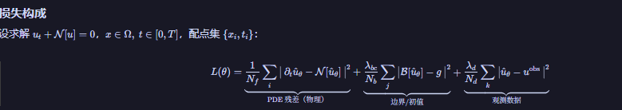
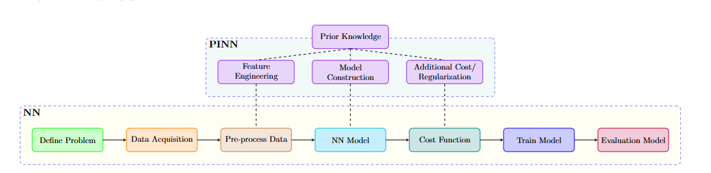
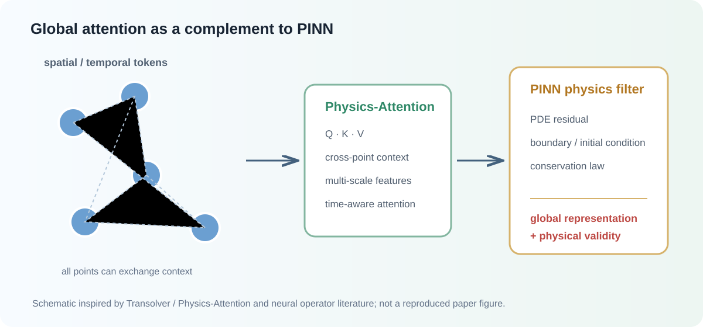
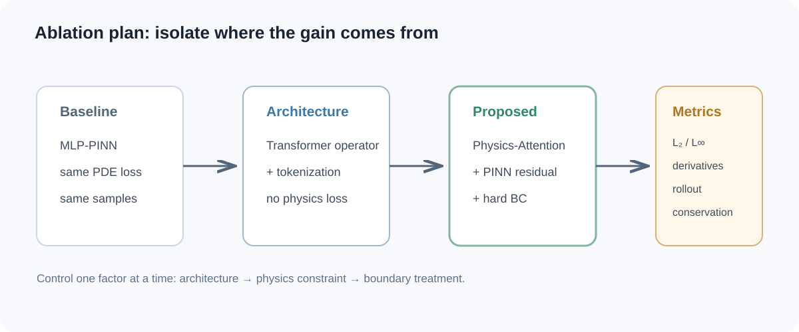

physics-informed machine learning · academic review
如何让大模型
学会物理
从 PINN 的约束，到 PDE 基座模型与 Physics Alignment
01 · concept
Physics-informed ML：
给学习系统加入物理信息
传统数值方法
有限差分、有限元、谱方法可以精确表达 PDE，但面对噪声数据、复杂网格、高维参数化和隐藏物理反问题时成本上升。
物理信息学习
网络不仅拟合观测数据，还通过 PDE、边界条件、初值条件或守恒律获得额外监督。
∇核心转变：换监督信号科学问题往往没有海量标注，但物理定律可以在任意时空点提供“免费标签”。
02 · constraint design
物理注入网络，有两种强度
软约束 · PINN
PDE 残差、边界条件和初值条件进入损失函数，灵活但只是被“鼓励”满足。
L = L_data + λ_f L_PDE + λ_b L_BC + λ_0 L_IC

PINN loss decomposition硬约束 · 特制架构
构造网络输出形式，使边界条件、对称性或守恒律在数学上恒成立。
û(x) = u_lift(x) + φ(x) Nθ(x)

Physics-informed training loopRULE OF THUMB能硬则硬：边界、对称、守恒优先硬约束；难硬则软：复杂几何、未知本构和含噪数据使用软约束。
03 · landscape
过去一年，PIML 的四条主要工作线
A打假与评测：我们是不是一直测错了？fidelity / FP64 / benchmark
B架构与约束：从 MLP 调参到 Transformer、KAN、硬约束architecture
CPDE 基座模型：从一个 PDE 一个网络到预训练 + 微调foundation model
DLLM / Agent：从自然语言自动构建 PINNphysics alignment
范式变化：从“求解一个方程”，走向“学习一类物理问题”。
04 · line A / evaluation
第一条主线：
重新检查“物理一致性”
导数保真度
函数值拟合得好，不代表自动微分得到的一阶或二阶导数可靠，边界和高曲率处误差可能放大。
arXiv:2609.13171AD vs 离散化
非线性越强，离散化约束可能用更小的优化误差补偿截断误差；复杂边界下 GNN 可能更有优势。
arXiv:2609.07437FP64 vs FP32
部分 PINN 失败可能不是损失病态，而是浮点精度不足；双精度会改变我们对优化问题的判断。
precision debateWARNING测试通过 ≠ 物理正确；函数值正确 ≠ 导数正确。
05 · line B / architecture
第二条主线：把物理写进结构
01HardNet / 投影层在网络内部强制输入相关约束，并研究施加约束后是否仍保留万能逼近能力。
02Transformer / 注意力OrthoSolver、Transolver 等尝试建模跨点依赖和多尺度 PDE 表示。
03KAN 系把可学习激活放到边上，增强低维问题中的可解释性和符号表达能力。
04损失平衡没有普适的最优加权，优化器、网络规模和物理刚性都会改变平衡策略的有效性。
难点仍在：复杂几何、多物理耦合、含噪反问题与公平基准。
06 · line C / foundation models
第三条主线：从一个 PDE 一个网络，
转向预训练 + 微调
NESTOR
Nested MoE：图像级专家捕捉全局依赖，token 级子专家捕捉局部模式，在多个 PDE 数据集上预训练迁移。
arXiv:2602.22059Flow Marching
将神经算子与 flow matching 结合，联合建模噪声水平和物理时间步，缓解长期 rollout 漂移。
arXiv:2602.11229组合式算子
CompNO、Starter-Iterator、AOT-POT 等探索模块化、正问题与反问题统一及大规模预训练。
operator pretrainingOPEN QUESTION预训练分布外的 PDE 泛化，是否真的遵循 scaling law？
07 · line D / LLM + agent
第四条主线：让自然语言成为
物理建模接口
PiT-PO
用物理信息 token 正则化的策略优化，让 LLM 生成方程时同时接受量纲、守恒和层级物理有效性的奖励。
symbolic regressionLang-PINN
多智能体负责方程解析、损失构建、网络配置与训练调优，从自然语言自动生成可运行 PINN。
LLM writes PINN!重要边界“LLM 写出了代码”不等于“LLM 内嵌了物理”。复杂几何、多物理和真实实验闭环仍缺少鲁棒性证据。
08 · paper walkthrough · 2026
把波动物理先验注入扩散模型
Incorporating Wave Physical Priors into Diffusion ModelsSeismic Resolution Enhancement · Surveys in GeophysicsDOI: 10.1007/s10712-026-09965-4
论文要解决什么？
现场地震数据缺少成对的高分辨率标签，同时存在带宽受限、噪声和薄层难分辨问题。目标是直接从现场观测中恢复高分辨率地震剖面。
PHYSICS LOOP高分辨率反射系数 x̂₀卷积波子 w现场观测 xx ≈ x̂₀ * w
三项核心设计
自监督渐进训练 · Robinson 卷积物理约束 · 扩散采样不确定性量化
01现场数据自监督构对原始观测 x 经过低通算子得到低分辨率条件 x̃ = FLP(x)；原始 x 作为当前阶段目标，不需要高分辨率标签。
02前向扩散制造训练输入对目标加入噪声：xt = √ᾱtx + √(1−ᾱt)ε，形成 (xt, x̃) → x 的训练三元组。
03U-Net 直接预测干净数据条件扩散网络接收噪声样本、低分辨率观测和时间步，直接预测 x̂₀ = fθ(xt, x̃, t)。
04渐进式分阶段细化当前阶段输出 y(k) 经低通得到新的条件，再作为下一阶段目标；重复 K 个阶段，逐步扩大分辨率差距。
05训练时加入复合损失L = λmseLmse + λphyLphy + λ1L1 + λtvLtv：同时约束重建、物理一致性、稀疏反射系数和横向连续性。
06反向采样中做物理校正每个去噪步计算卷积物理损失梯度，先更新 x̃t = xt − λ∇xₜLphy，再执行扩散反向更新。
07输出增强结果与置信度用不同噪声种子重复采样，平均得到高分辨率结果，样本标准差形成空间不确定性图，标出低置信区域。
输入：现场低分辨率地震数据→PG-SSDM：自监督 + 物理引导扩散→输出：薄层恢复 · 降噪 · 连续性 · 不确定性
Tang et al., 2026 · Open access · Surveys in Geophysics
09 · proposed idea
Transformer + PINN：
让模型从局部拟合走向全局建模
PINN 的瓶颈
MLP 以点为中心独立拟合，难以表达长距离依赖；高频、多尺度和强间断解容易被谱偏置抹平；长时间 rollout 误差累积。
局部感受野高频难学长程依赖弱
Transformer 的补位
用注意力建立跨配点、跨区域的信息交互，再由 PDE 残差、边界条件和守恒律筛选物理可行解。
全局注意力多尺度 token跨域交互

启发：Transolver / Physics-Attention、OrthoSolver、Fourier Neural Operator；PINN 约束形式沿用 Raissi et al.
10 · experiment design
把“补齐缺点”变成可验证的实验假设

RESEARCH QUESTIONTransformer 的全局表示，能否在相同物理约束和计算预算下，稳定改善 PINN 的局部误差、导数误差与长时间预测？
takeaways · Q&A
让模型不仅会拟合，
还要尊重物理
PIML 的下一阶段，不是简单扩大网络，而是建立可信评测、结构化约束、跨 PDE 预训练与 Physics Alignment 的统一闭环。
evaluate honestlyconstrain wiselyalign with physics